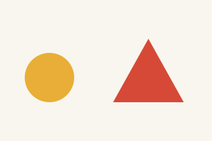

Request: change only the red triangle to blue. Keep all other objects, sizes and positions unchanged.
Compare the original and edit. Mark whether there is an unintended change. If Yes, drag a box around each affected region in the edit. Describe the change in a short phrase. Do not box the requested triangle color change. For no unintended changes, select No. If either image cannot be inspected select Cannot judge.
